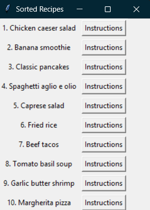

Recipe Planner
This is a python project that is designed to help people figure out what to eat. You can add recipes via csv file or through the GUI. You can rank the importance of taste, time, and cost for each recipe, then after they are sorted you can pick on and see its recipe. This was a decently complicated project that I decided to make because I wanted something to help me with my issues deciding what to make for dinner when I would forget the various options I had.
Tavern Keep Simulator

A simple text based simulator written in C#, where you attempt to run a tavern. At the start of each day you can stock up on food and check your finances, then when the day starts you get customers who have a preferred meal, and if you serve them their preferred meal fast enough then you get full cash, but if you take too long or serve them the wrong food then you will get reduced money. While there aren't real consequences for serving the average customer incorrectly, beware of the inspector. The inspector will arrive and not only be harsher than the average customer but if you mess up serving them then your tavern will be shut down and the game over. As you progress through the days you serve more customers, and inspectors appear more frequently.